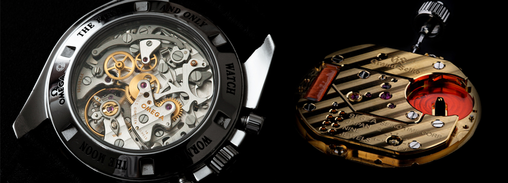
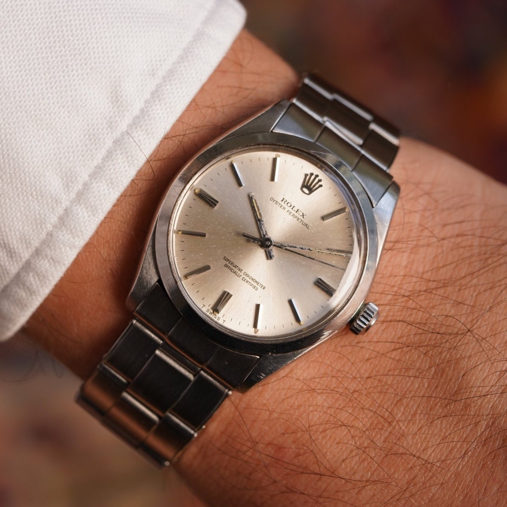
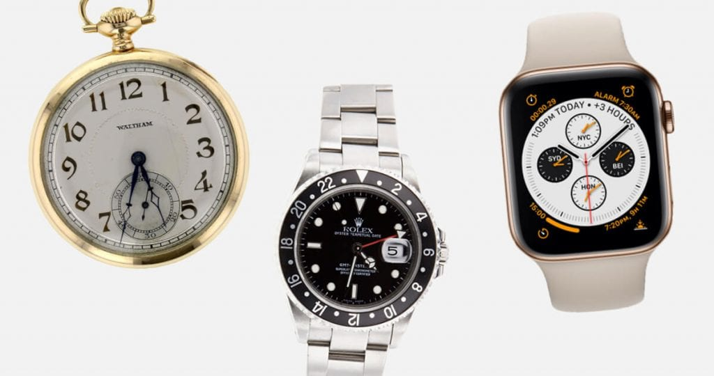
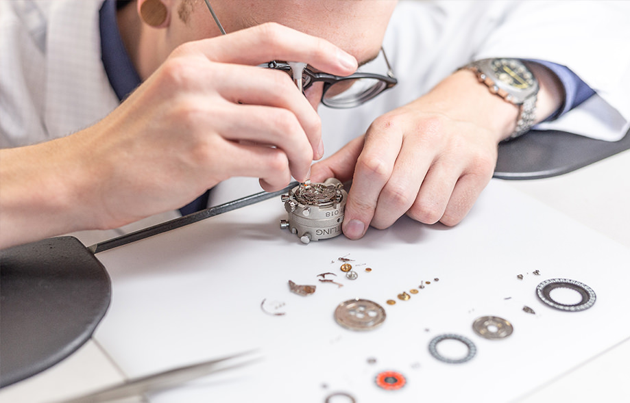
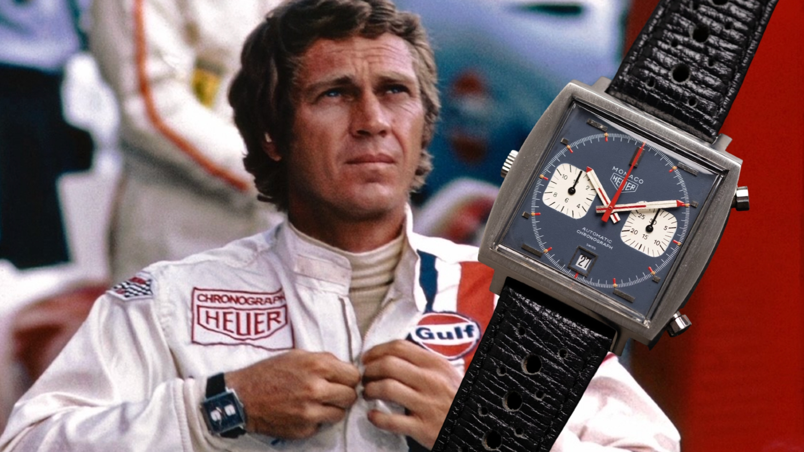
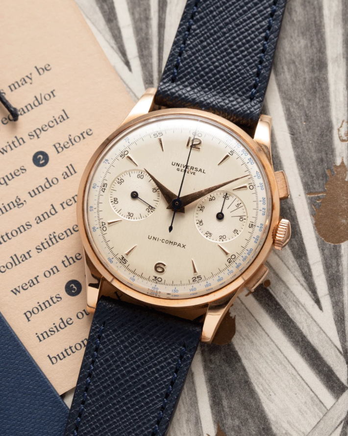
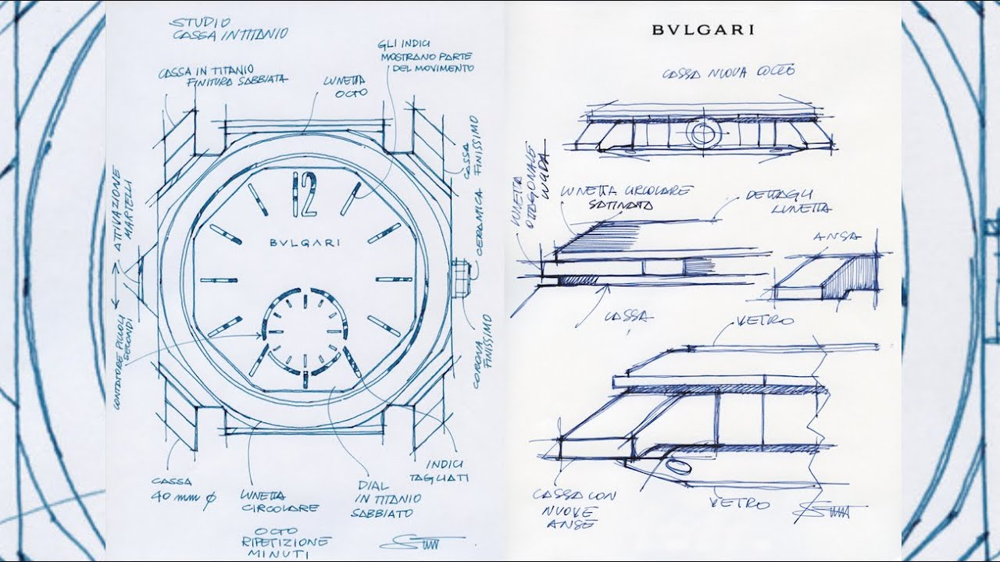
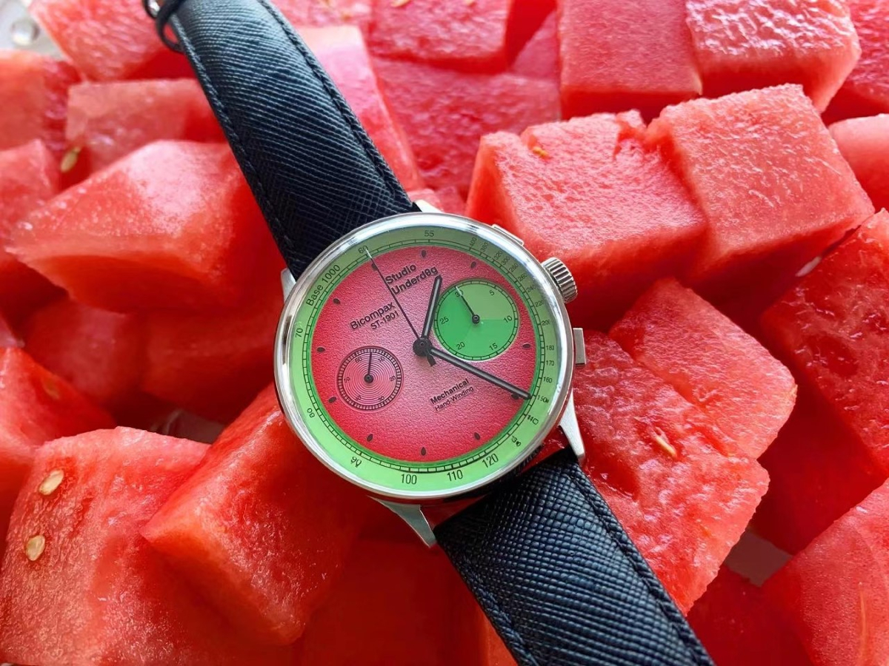

 Satovi su mnogo više od pukih merača vremena – oni su spoj umetnosti, tehnologije i tradicije. Kroz istoriju su se razvijali u različitim oblicima, a danas najčešće nailazimo na tri osnovne vrste: mehaničke, kvarcne i automatske satove. Svaki od njih ima svoju priču, način rada i specifičan šarm. Mehanički satovi predstavljaju srce tradicionalnog časovničarstva. Njihov rad zasniva se na ručnom navijanju opruge koja pokreće složen sistem zupčanika. To su satovi koje cenimo zbog zanatske veštine u izradi, dugovečnosti i posebnog osećaja koji pruža svakodnevno navijanje. Iako zahtevaju više pažnje i ne dostižu preciznost kvarcnih modela, mehanički satovi odišu karakterom i elegancijom koja nikada ne izlazi iz mode. Kvarcni satovi doneli su revoluciju u preciznosti i dostupnosti. Njih pokreće baterija i kvarcni kristal, koji vibrira u preciznom ritmu i omogućava gotovo savršeno tačno vreme. Zahvaljujući jednostavnijem mehanizmu, oni su pouzdani, laki za održavanje i često pristupačniji. Idealni su za one koji žele tačnost bez potrebe za čestim podešavanjima. Automatski satovi su, na neki način, spoj mehaničke tradicije i modernog komfora. Funkcionišu slično mehaničkim, ali se navijaju automatski putem pokreta ruke dok se nose. To ih čini praktičnijim za svakodnevnu upotrebu, a istovremeno zadržavaju dušu i složenost klasičnog mehanizma. Nositi automatski sat znači nositi deo istorije koji oživljava svakim pokretom. Bez obzira na to da li vas privlači preciznost kvarca, umetnost mehanike ili ravnoteža koju nude automatski modeli, izbor sata govori mnogo o vašem ukusu, načinu života i poštovanju prema vremenu. Svaki sat ima svoju priču – na vama je da odaberete onu koja će najbolje ispričati vašu.
Autor: Nikola Obradović
 Kupovina sata može biti mnogo više od modnog izbora ili ličnog užitka – za mnoge, sat je i pametna dugoročna investicija. U svetu gde se vrednosti brzo menjaju, određeni modeli satova uspevaju da zadrže, pa čak i uvećaju svoju cenu kroz godine, pretvarajući se iz običnog dodatka u prestižni i vredan kolekcionarski predmet. Investicioni satovi najčešće dolaze iz renomiranih časovničarskih kuća sa bogatom istorijom i dokazanim kvalitetom izrade. Brendovi poput Rolexa, Omege, Patek Philippe-a i Audemars Piguet-a redovno privlače pažnju kolekcionara i investitora širom sveta. Njihovi modeli su često izrađeni u ograničenim serijama, sa vrhunskim materijalima i mehanizmima koji traju decenijama bez gubitka funkcionalnosti. Kada takav sat dođe na tržište polovnih satova, njegova vrednost često prevazilazi originalnu cenu. Međutim, investiranje u satove ne svodi se samo na skupe modele. Čak i neki pristupačniji satovi, poput određenih Seiko ili Citizen modela, mogu s vremenom dobiti na vrednosti ako imaju posebne karakteristike, ograničeno izdanje ili istorijsku važnost. Ključ je u prepoznavanju potencijala na vreme, informisanju i praćenju tržišta. Važno je napomenuti da vrednost sata ne zavisi samo od brenda, već i od očuvanosti, originalnosti delova, pakovanja, dokumentacije i redovnog održavanja. Sat koji se pažljivo nosi i pravilno servisira može trajati generacijama, a njegova priča vremenom postaje još zanimljivija. U vremenu kada se mnoge investicije čine neizvesnim, satovi nude jedinstvenu kombinaciju elegancije, pouzdanosti i dugoročne vrednosti. Oni nisu samo merilo vremena – već i merilo ukusa, znanja i mudrog ulaganja.
Autor: Nikola Obradović
 Istorija satova je priča o večitoj ljudskoj potrebi da se vreme razume, meri i kontroliše. Još u drevnim civilizacijama, ljudi su pokušavali da uhvate ritam dana i noći pomoću prirodnih pojava. Prvi pokušaji merenja vremena započeli su sunčanim časovnicima, jednostavnim uređajima koji su senkom pokazivali približno vreme dana. Iako su zavisili od vremenskih uslova, predstavljali su značajan korak ka preciznijem poimanju vremena. Kroz vekove su se razvijali i vodeni satovi, peščani časovnici i astronomski mehanizmi, sve dok u srednjem veku nisu počeli da se pojavljuju prvi mehanički satovi u tornjevima evropskih gradova. Bili su masivni, grubi i ne baš precizni, ali su obeležili početak nove ere – one u kojoj je vreme počelo da postaje deo svakodnevnog života. Pravi preokret dogodio se u 16. i 17. veku kada su časovničari počeli da prave satove dovoljno male da se nose. Džepni satovi postaju statusni simbol aristokratije, dok su se kroz naredna dva veka razvijali u pogledu preciznosti, dizajna i izrade. Početkom 20. veka, ručni satovi počinju da zamenjuju džepne, posebno tokom ratova, kada je brzina i praktičnost nošenja sata na ruci bila presudna. U drugoj polovini 20. veka dolazi do još jedne revolucije – pojave kvarcnih satova. Zahvaljujući kvarcnom kristalu i električnoj energiji, satovi postaju daleko tačniji, jeftiniji i pristupačniji. Japanski brendovi, poput Seika, prednjače u ovom talasu i menjaju globalno tržište, dovodeći do takozvane "kvarcne krize" koja je ugrozila mnoge tradicionalne švajcarske proizvođače. U savremenom dobu, satovi su dobili još jednu dimenziju – pamet. Pametni satovi nisu više samo pokazivači vremena, već i lični asistenti. Oni prate zdravlje, komuniciraju s telefonom, mere otkucaje srca, broj koraka, kvalitet sna i još mnogo toga. Ujedinjuju funkcionalnost modernih tehnologija sa estetikom klasičnog dizajna. Ipak, uprkos tehnološkom napretku, klasični mehanički i automatski satovi i dalje imaju posebno mesto. Oni su spona sa prošlošću, svedoci vremena kada je svaki zupčanik bio umetničko delo. Tako se istorija satova, od sunčanih do pametnih, ne posmatra kao linija, već kao krug u kojem tradicija i inovacija neprestano pronalaze zajednički ritam.
Autor: Nikola Obradović
 Sat nije samo funkcionalan predmet, već često i lični simbol, poklon sa značenjem ili čak porodična uspomena. Bez obzira da li je reč o luksuznom mehaničkom satu, preciznom kvarcnom modelu ili jednostavnom svakodnevnom časovniku, pravilno održavanje i čuvanje presudni su za njegov dug vek i pouzdan rad. Najvažniji korak u očuvanju sata je redovno čišćenje. Prašina, znoj i vlaga mogu se vremenom nakupiti na kućištu i narukvici, posebno kod metalnih i silikonskih modela. Blaga sapunica i meka krpa dovoljni su za osnovno čišćenje, dok se kod kožnih kaiševa preporučuje izbegavanje prekomernog kvašenja. Mehanički i automatski satovi zahtevaju dodatnu pažnju, jer čak i mala količina vlage može uticati na unutrašnji mehanizam ako sat nije dovoljno otporan na vodu. Servisiranje je još jedan ključni aspekt. Mehanički satovi, recimo, treba da se servisiraju na svakih nekoliko godina – čak i ako naizgled rade bez greške. Tokom servisa, stručnjak proverava stanje mehanizma, podmazuje ga i menja istrošene delove, čime se sprečava oštećenje koje bi moglo skupo da košta. Kod kvarcnih satova, redovna zamena baterije sprečava curenje i oštećenje mehanizma, što se ponekad dešava kada se istrošena baterija predugo ostavi unutra. Pravilno čuvanje sata kada se ne nosi takođe je važno. Sat bi trebalo držati na suvom mestu, dalje od direktne sunčeve svetlosti i izvora toplote. Idealno je koristiti kutiju u kojoj je sat kupljen, ili posebnu kutiju za satove sa mekanom podlogom. Automatski satovi koji se ne nose redovno mogu se čuvati u specijalnim "watch winder" kutijama koje ih lagano okreću i time održavaju mehanizam u pokretu. Magnetna polja, udarci i nagle promene temperature su tihi neprijatelji svakog sata. Držanje sata dalje od jakih magneta (poput zvučnika ili torbica sa zatvaračem), izbegavanje fizičkih udaraca i neostavljanje sata na direktnom suncu tokom leta može značajno doprineti njegovom zdravlju. Briga o satu ne mora biti komplikovana, ali ona pravi razliku između predmeta koji traje nekoliko godina i onog koji se s ponosom prenosi s generacije na generaciju. Satovi koji se čuvaju sa pažnjom ne samo da ostaju tačni – oni čuvaju i vreme koje je sa njima prošlo.
Autor: Nikola Obradović
 Satovi nisu samo detalji – često su ključni deo karaktera na ekranu. U mnogim filmovima i serijama, oni imaju ulogu daleko veću od pokazivača vremena. Bilo da simbolizuju status, lični stil ili pripadnost određenom svetu, satovi u pop kulturi postali su ikone za sebe. Neki modeli su zahvaljujući svom pojavljivanju na velikom platnu doživeli ogroman skok popularnosti i ostali zauvek povezani sa određenim likovima i pričama. Jedan od najpoznatijih primera je Omega Seamaster, sat koji je postao neraskidivo vezan za lik Jamesa Bonda. Od filma „GoldenEye“ iz 1995. godine, kada ga je nosio Pierce Brosnan, pa sve do Dana Craiga, Omega je postala sinonim za špijunsku eleganciju, pouzdanost i diskretnu sofisticiranost. Pre toga, u ranim bondovskim filmovima, Bond je nosio Rolex Submariner – još jedan legendarni model koji je kroz decenije stekao kultni status, kako u fikciji, tako i među kolekcionarima. U filmu „Le Mans“ iz 1971. godine, Steve McQueen nosi Tag Heuer Monaco, sat koji je zahvaljujući njegovom imidžu i strasti prema automobilizmu postao oličenje sportskog duha i muževnog stila. McQueen ga nije nosio slučajno – bio je zaljubljenik u trke i želeo je da njegov lik autentično odražava taj svet. Danas je taj model gotovo sinonim za njega. Još jedan nezaboravan trenutak dolazi iz filma „Pulp Fiction“, gde Christopher Walken drži monolog o satu koji je generacijama prenošen kroz porodicu. Taj sat, iako fikcijski, ostavio je snažan utisak – ne zbog brenda, već zbog emocije i simbolike koju nosi. Ne treba zaboraviti ni kultni Casio F-91W, koji se pojavio u brojnim filmovima, serijama, pa čak i animacijama. Ovaj digitalni klasik postao je simbol jednostavnosti, tačnosti i nostalgije za 80-im i 90-im godinama. Prisutan je u svakodnevici, ali i na zapešćima poznatih ličnosti, često kao namerni kontrast luksuznom okruženju. U novijim produkcijama, pametni satovi takođe dobijaju mesto na ekranu, ali su klasični modeli i dalje oni koji izazivaju najviše pažnje. Sat u filmu može biti suptilan detalj, ali i moćna poruka – o karakteru, vremenu, prošlosti i statusu. Bilo da se nalazi u kadru samo nekoliko sekundi ili igra važnu simboličku ulogu, sat na filmu često postaje zvezda za sebe – i predmet želje gledalaca širom sveta.
Autor: Nikola Obradović
 Vintage satovi nisu samo stari satovi – oni su vremenske kapsule, svedoci epoha, stilova i tehnologija koje više ne postoje. Svaki od njih nosi priču, bilo da je reč o mehaničkom remek-delu iz 60-ih, vojnom satu iz Drugog svetskog rata ili kvarcnom klasiku iz zlatnog doba japanske preciznosti. Upravo ta kombinacija istorije, retkosti i karaktera čini vintage satove toliko posebnim i poželjnim, kako kolekcionarima, tako i svima koji žele nešto što ima dušu. Ono što razlikuje vintage sat od običnog polovnog sata jeste upravo taj duh vremena koji se oseća u svakom detalju – od boje brojčanika koja je s godinama blago potamnela, preko oštećenja koje priča neku priču, do specifičnog dizajna koji više ne može da se nađe u modernim kolekcijama. U vremenu kada mnogo toga izgleda isto, vintage sat nudi autentičnost i individualnost. Mnogi modeli iz prošlog veka danas imaju status ikone – bilo da su to legendarni Rolex Submariner iz 70-ih, Seiko 6139 koji je bio jedan od prvih automatskih hronografa, Omega Speedmaster koji je leteo u svemir, ili Longines modeli iz vremena elegancije i rukotvorina. Neki od tih satova su retki i skupi, ali postoji i veliki broj pristupačnih vintage modela koji nude vrhunski kvalitet i posebnu estetiku, često za manje novca nego moderni masovni modeli. Pronaći dobar vintage sat zahteva strpljenje, istraživanje i pažnju. Važno je proveriti da li je sat originalan, da li su svi delovi autentični, u kakvom je stanju mehanizam , i da li je pravilno održavan. Najbolje je kupovati od proverenih kolekcionara, antikvarnica, aukcija ili specijalizovanih sajtova. I naravno – ne očekivati savršenstvo. Manji tragovi korišćenja nisu mana, već deo šarma. Vintage sat nije samo predmet – to je komad istorije koji nosite na ruci. U vremenu brzih trendova i kratkog veka trajanja, on predstavlja stabilnost, trajnost i sećanje na vreme kada su stvari pravljene da traju. Upravo zato, interesovanje za vintage satove iz godine u godinu raste – jer u svakom od njih kuca više od jednog mehanizma.
Autor: Nikola Obradović
 Iako deluje kao jednostavan predmet koji pokazuje vreme, izrada sata je složen proces koji spaja precizno inženjerstvo, umetnost i tradiciju. Iza svakog kvalitetnog sata stoji niz koraka koji zahtevaju vrhunsku preciznost, posvećenost detaljima i – vreme. Od prve ideje do momenta kada sat zasija na nečijem zglobu, često prođe više meseci, pa čak i godina. Sve počinje dizajnom. Sat mora da ima balans između estetike i funkcionalnosti. Dizajneri pažljivo skiciraju izgled kućišta, brojčanika, kazaljki, krunice i narukvice, birajući boje, materijale i proporcije. Uz savremeni softver, svaki deo se modelira u 3D kako bi se proverila ergonomija, ali mnogi majstori i dalje koriste papir i olovku – jer inspiracija često dolazi iz ruke, ne iz računara. Nakon dizajna, kreće razvoj mehanizma, poznatog i kao „kalibar“. Kod mikrobrendova i manjih proizvođača, često se koriste već postojeći mehanizmi poznatih proizvođača poput ETA, Sellita, Miyota ili Seiko, ali kod velikih i luksuznih brendova razvijaju se tzv. in-house kalibri. Tu se sve pravi iznutra – od osnovne ploče do svakog zupčanika. Mehanizmi mogu imati stotine delova, a svaki mora da bude izrađen precizno do mikrona. To je deo koji se retko vidi spolja, ali je srce svakog sata. Izrada kućišta i brojčanika zahteva podjednako pažnje. Materijali variraju – od nerdjajućeg čelika i titana, do zlata, keramike, pa čak i ugljeničnih vlakana. Površine se obrađuju različitim tehnikama: poliranjem, brušenjem, peskiranjem, ugraviranim detaljima. Brojčanici se štampaju, boje i često ručno nanose indeksi ili lume (sjajni premaz). Kod luksuznih modela, brojčanik može sadržati i umetničke tehnike poput emajliranja, skeletonizacije ili gravure. Sklapanje sata je kao slaganje mikroskopske slagalice. U posebnoj prostoriji, pod lupama i u sterilnim uslovima, časovničari sastavljaju mehanizam, dodaju kazaljke, zatvaraju kućište i pažljivo postavljaju staklo. Svaki sat se zatim testira – za tačnost, vodootpornost, otpornost na udarce i ponekad čak i za otpornost na magnetna polja. Na kraju, sat se montira na narukvicu ili kaiš, pakuje u kutiju, i tek tada je spreman da pronađe svog vlasnika. Iza svakog zupčanika, svakog otkucaja kazaljke, stoji znanje generacija i strpljenje koje ne može da se ubrza. Zato pravi sat nije samo proizvod – on je rezultat procesa u kom je svaki deo dobio svoje mesto, i svaki trenutak svoju vrednost.
Autor: Nikola Obradović
 U svetu satova, pored velikih i poznatih imena, poslednjih godina sve više pažnje privlače mikrobrendovi – mali, nezavisni proizvođači koji često prave limitirane serije i ulažu ogromnu strast u svaki model. Njih ne pokreće masovna proizvodnja, već ideja da ponude nešto posebno, originalno i često mnogo kvalitetnije nego što bi se očekivalo u toj cenovnoj klasi. Mikrobrendovi često sarađuju sa poznatim proizvođačima mehanizama (kao što su Miyota, Sellita ili Seiko) i fokusiraju se na dizajn, kvalitet materijala i direktnu vezu sa kupcima. Bez velikih marketinških budžeta, oslanjaju se na zajednicu entuzijasta, forume, društvene mreže i crowdfunding platforme kao što su Kickstarter i Indiegogo. Ono što ih izdvaja jeste hrabrost da eksperimentišu – ne plaše se neobičnih brojčanika, zanimljivih kućišta, vintage inspiracije ili modernih kombinacija koje veliki brendovi retko nude. Kupovinom mikrobrend sata, ne kupujete samo proizvod, već i priču, ideju i direktnu podršku malim timovima koji stoje iza svakog modela. Iako nemaju dugu tradiciju kao švajcarski giganti, mikrobrendovi osvajaju poverenje kvalitetom, transparentnošću i jednim drugačijim pristupom – sat kao izraz ličnosti, a ne samo statusni simbol. I upravo zato – njihovo vreme tek dolazi.
Autor: Nikola Obradović
©2025 RetroWatch - Sva prava zadržana